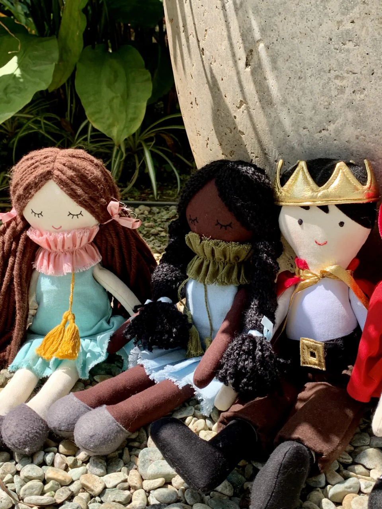

Mais que uma boneca.
Uma companheira para a infância.
Costuradas à mão com tecidos 100% algodão e enchimento antialérgico. Criadas para abraçar com segurança e despertar a imaginação através do brincar afetivo.
Conhecer ColeçõesPonto a Ponto
Cada peça é única, costurada artesanalmente com pontos reforçados para durar por muitas brincadeiras.
Toque Antialérgico
Materiais selecionados, tecidos 100% algodão e fibra siliconada pura, totalmente seguros para abraçar.
Roupinhas Interativas
Vestidos e laços fáceis de trocar, estimulando a coordenação motora e abrindo asas para a criatividade.
Carinho na Entrega
Enviamos em embalagem perfumada e decorada, pronta para presentear e arrancar sorrisos desde a abertura.
Feitas para colecionar e vestir
Escolha o modelo que mais combina com a sua criança ou monte um guarda-roupa de acessórios adicionais:

Bonecas Clássicas
Companheiras de tecido macio com vestidos florais elegantes que parecem saídas de contos de fadas.

Roupinhas & Acessórios
Vestidos extras, sapatinhos e laços de cabelo. Perfeitos para trocar o visual e renovar as brincadeiras cotidianas.
Projetos Sob Encomenda
Escolha o tom de pele, cor dos olhos, estilo do cabelo e estampa favorita para criar uma companheira parecida com a sua criança.
Brinquedos com alma de verdade
Acreditamos que brinquedos artesanais carregam história. Ao contrário do plástico industrial, a boneca de pano é quente, macia, acolhedora e tem o cheiro do lar.
Na Sônia Divart, criamos companheiras que guardam segredos, ouvem histórias e acompanham o crescimento dos pequenos com afeto e durabilidade.
Conhecer Nosso ProcessoO que dizem as mamães
A boneca Laura chegou impecável. O cheirinho da embalagem é maravilhoso e minha filha de 3 anos não larga ela por nada. O vestido é super fácil de trocar, ela passa o dia brincando!
Mariana S.
Mãe da Gabi (3 anos)Eu estava cansada de brinquedos de plástico que quebram à toa. A boneca da Sônia tem costuras muito reforçadas, é linda e macia. Dá para ver o carinho em cada ponto. Vale muito a pena.
Camila R.
Mãe da Clara (5 anos)Dúvidas Frequentes
Sim! Como são feitas 100% de algodão com enchimento antialérgico, podem ser lavadas manualmente. Junto com a boneca, enviamos um guia com instruções passo a passo para que ela permaneça sempre limpa e cheirosa de forma segura.
Com certeza. O enchimento é de fibra siliconada virgem de alta qualidade, que é naturalmente antialérgica, antimofo e não junta poeira. Além disso, as bonecas clássicas não contam com botões ou partes pequenas coladas que possam se desprender, sendo ideais para qualquer idade.
Você pode escolher o tom de pele, cor dos olhos, tipo de cabelo (lã ou algodão) e estampas principais das roupinhas. Para encomendar uma boneca personalizada, basta clicar no botão de contato ou nos chamar no WhatsApp. Nós definimos todos os detalhes com você antes de começar a costurar.